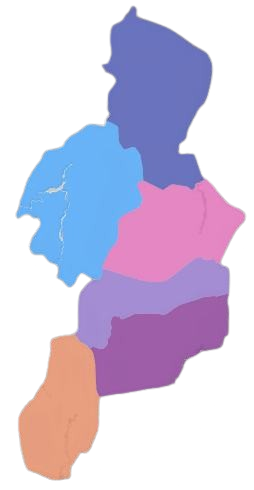
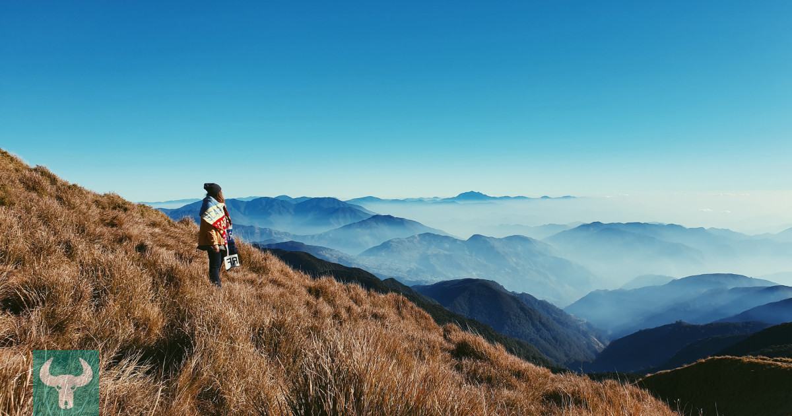
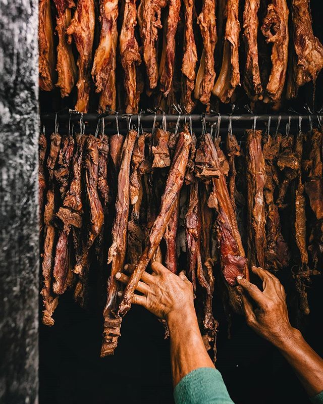

<!DOCTYPE html>
<html>
<meta charset="UTF-8">
<meta http-equiv="X-UA-Compatible" content="IE=edge">
<meta name="viewport" content="width=device-width, initial-scale= 1.0">

<link rel="stylesheet" href="Jacob_Website.css">
<title>YCordillera</title>  </html>
<header class="header">
  <a href="#" class="logo">YCORDILLERA AK</a>
  <nav class="navbar">
    <a href="#" class="active">Home</a>
    <a href="Jacob_Websiteabout.html" onclick="return confirm('Info about the website not the creator')" >About </a>
    <a href="Jacob_Websitecontacts.html">Contact</a>
    <button class="button"><a href="WebsiteSignin.html">Sign in</a></button>
    <button class="button"><a href="WebsiteSignup.html">Sign up</a></button>
  </nav>
</header>
<body>
  <div class="map">
      
    <a href="Apayao.html" class="apayao" onclick="">APAYAO</a>
    <a href="Abra.html" class="abra">ABRA</a>
    <a href="Kalinga.html" class="kalinga">KALINGA</a>
    <a href="Mt.province.html" class="mtprovince">MT PROVINCE</a>
    <a href="Ifugao.html" class="ifugao">IFUGAO</a>
    <a href="Benguet.html" class="benguet">BENGUET</a>
  </div>
  
  <div class="homedesc"><p >The
    Cordillera Administrative Region (CAR)
    is a region in the Philippines composed of the provinces of Abra, Apayao, Benguet, Ifugao, Kalinga
    and Mountain Province. The Cordillera Administrative Region 
    encompasses most of the areas within the Cordillera Central mountains of Luzon,the largest mountain 
    range in the country. It is the country's only land-locked region. The region is home to 
    numerous indigenous tribes collectively called the Igorot.
  </p> </div>
  
  <p class="homedesc2">
    It is amountain range comprising one-sixth of the total landarea of Luzon Island.Home to around 1.2 million indigenous peoples  known as Igorots.
    The Igorots include a number of ethno-linguistic groups,among the major groups of which are the
    Bontok,Kankanaey, Ibaloy, Kalinga, Tingguian, and Isneg.
  </p>
  <p class="homedesc3">
  The Cordillera Region is the ancestral homeland of the Cordillera indigenous peoples, collectively referred 
  to as the “igorots”, meaning “people of the mountain”.
  </p>
  
  <p class="homedesc4">
    Etag is the general term used in Cordillera for a traditional way of preserving pork. A slab from a big slice
     of pork is cured in salt for about a week, then air-dried under the sun  for several weeks, or months,
      or both. And making Kiniing is the same process with making Etag, the only difference is that it is smoked though any kind of 
      wood will do the smoking, the Igorots would prefer to use the wood from a tree they 
      called alnos as it would emit pleasant smoke and add aromatic smoky flavour to the meat.
       If alnos is not available, then wood and leaves of the guava tree are said to be a good substitute.These two delicacies
       are two of the most popular Cordilleran delicacies
  </p>

</body>
<footer>
  jacobivanfranzrandall@gmail.com . All rights Reserved
</footer>
</html>